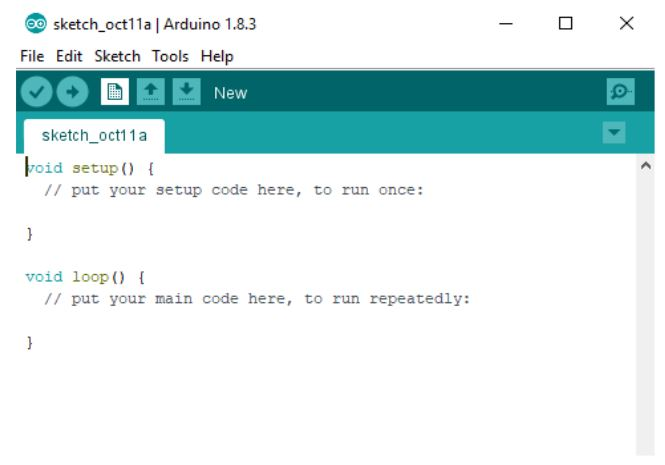
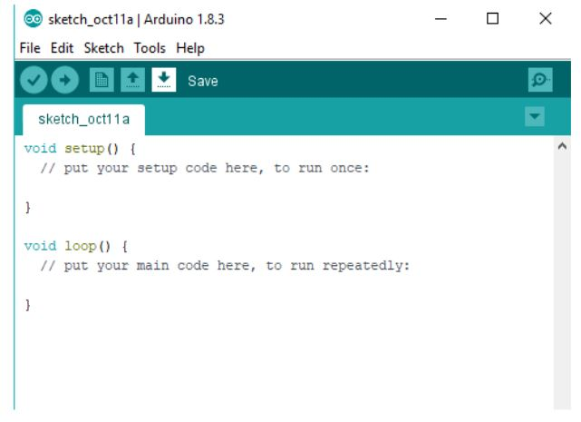

INSTALLATION¶
Arduino IDE¶
Free and Open-source
Easy-to-use
Compatible
Easy-to-understand
Reliable
Download¶
To download the Arduino IDE, open url https://www.arduino.cc/en/Main/Software.
Now select the download file based on your operating system.

Installation (Windows)¶
Now click on the downloaded file to start the installation.

Now accept the license agreement by clicking on I Agree button.

Click on Next to install various components of Arduino IDE Setup.

Now select the directory for installation and click Install button.

The following dialogue box appears, click Close after the installation is completed.

If the drivers are not pre-installed on your desktop, then a series of driver installation dialog box will appear. Click Install to install the necessary drivers.

The installation has been completed.
Now click on the desktop icon to start the Arduino IDE.
Installation (Linux)¶
Extract the downloaded package.
In the extracted folder, find the install.sh file.
Right click on it and chose the Run in Terminal from contextual menu.
If you can’t find the Run in Terminal option from contextual menu, then open Terminal and navigate to the extracted folder
Type the command ./install.sh and wait for the process to finish
Now, the Arduino IDE has been installed

It might be the case that you would not be able to upload the sketch because of serial port permission. The corresponding error message is ”Error connecting to Serial Port”
To set the permission, open Terminal and type ** ls -l /dev/ttyACM* **
The data we need is ‘dialout’(this is the group owner of the file)
Now we need to add our user to that group with the help of the following command “sudo usermod -a -G dialout <username>”
Installation (Mac OS X)¶
Extract the downloaded package.

Copy the Arduino application into the Applications folder or any other location.

The installation has been completed.
Now click on the Arduino icon to start the Arduino IDE.

User Interface¶

File Tab and Edit Tab¶

Sketch Tab and Tools Tab¶

Meaning of Symbols-Verify¶

Upload¶

New¶
Open¶

Save¶
Serial Monitor¶

Functions¶